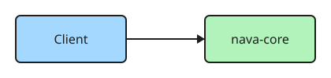

Viewer sample
The viewer gives every diagram zoom, pan, reset and full screen. Authors write nothing extra. Remove this page when real diagrams exist.
Mermaid
flowchart LR client[Client] --> core[nava-core] core --> db[(PostgreSQL)] core --> outbox[Outbox] outbox --> relay[Relay] --> temporal[Temporal]
Excalidraw

Search target
The word flamingo appears only on this page, so search can be checked.